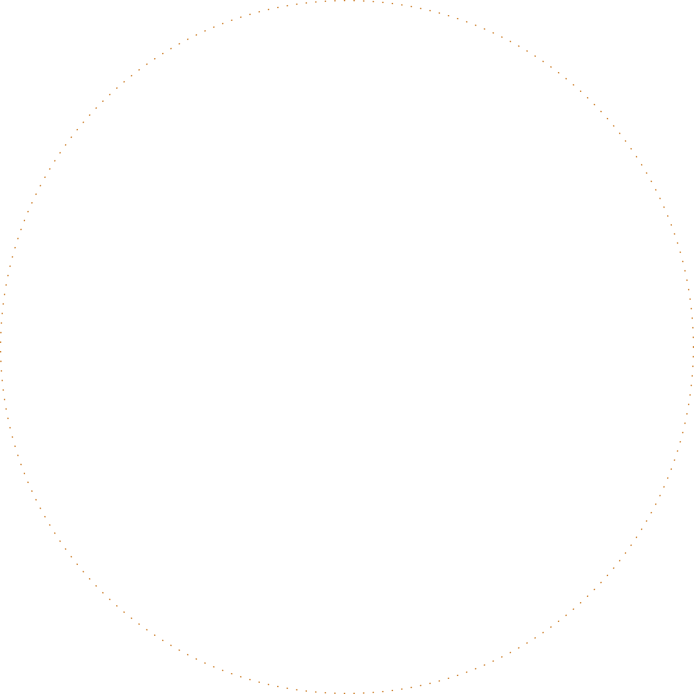
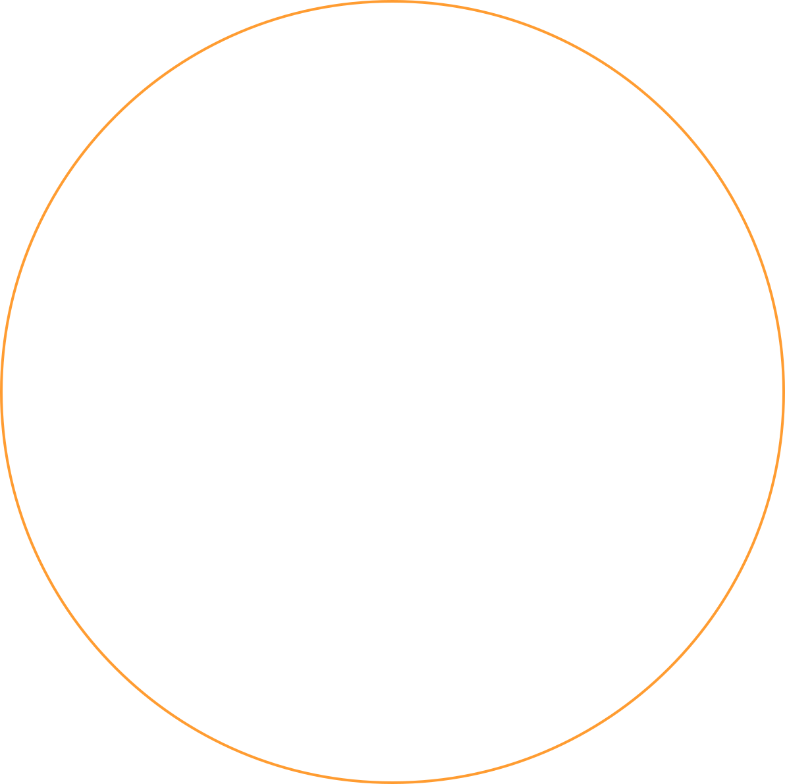

Your mind is
always on.
Your support
should be, too.
Dawn is 24/7 support for your mind. Created by renowned clinicians, it gives you the support you need, right when you need it.
24/7 support for your mind
Over 99% of life happens between therapy sessions. Dawn meets you in the moments that matter, with proactive check-ins and real-time responses at any time of day.

The future of mental health is proactive
For too long, mental health has been something we only focus on when things fall apart. Dawn uses advanced AI to shift from reactive to proactive support. Now, you can resolve stressors before they become crises.
Intuitive chat.
Total privacy.
With no human observing your conversations, Dawn is private and judgment free. It sees your patterns and remembers your history to provide personalized support that evolves with you. All in a single thread.
Dawn
HealthBrand, Web design, Development